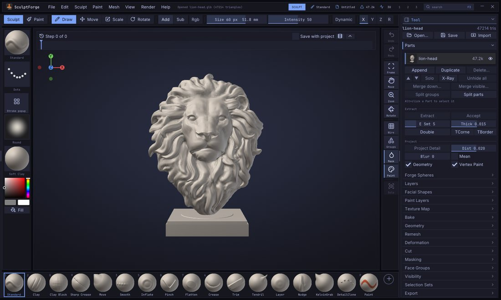
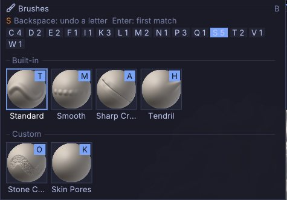
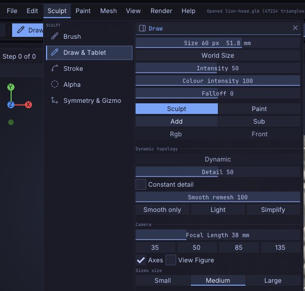
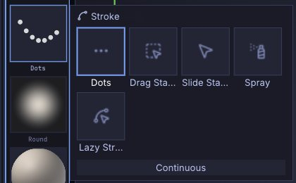
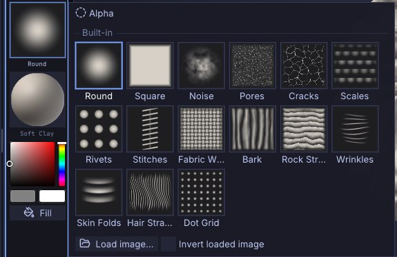
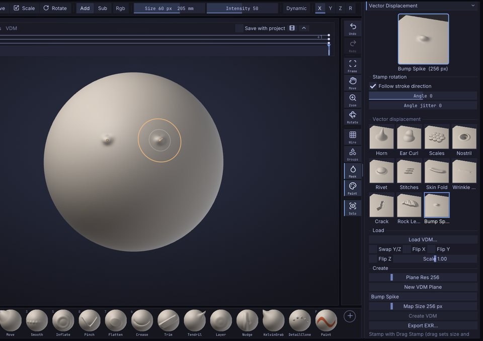
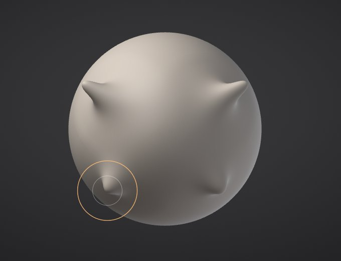
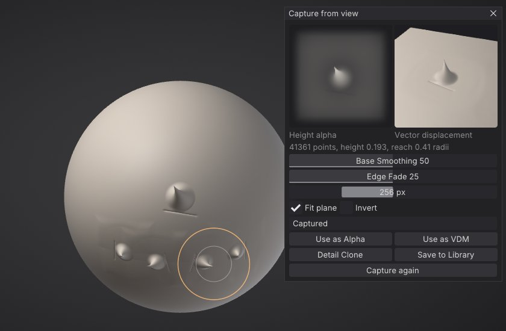
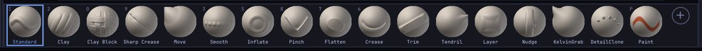

Sculpting and brushes
This chapter covers everything that happens when you drag a brush across a model: the built-in brushes and the custom brushes that ship with SculptForge, brush size and strength, modifier keys, stroke types, alphas, symmetry and pen pressure. To design your own brushes, see Brush Lab and sharing brushes.


Your first stroke#
- Pick a brush: click it on the bottom shelf, press its number key, or press B to open the brush picker.
- Left-drag on the model. The brush works on the surface under the cursor.
- Hold Alt while dragging to invert the brush (dig in instead of building up), or hold Shift to smooth.
- Press Ctrl+Z to undo a stroke, Ctrl+Shift+Z (or Ctrl+Y) to redo it. Each Part keeps its own history of up to about 1 GB; the oldest steps are dropped beyond that.
Dragging on the background never sculpts: it rotates the view (see Navigation). The brush only works on the active Part, and only on parts that are visible and not masked. A stroke that started on the model keeps sculpting when it slides past the edge of a form seen in profile, as long as the brush circle still covers the model: the brush holds on to the silhouette (#84).
Built-in brushes#
SculptForge has nineteen sculpting brushes plus the Paint brush. The first ten have number keys; all of them are on the bottom shelf by default and in the brush picker.
| Brush | Key | What it does | With Alt |
|---|---|---|---|
| Standard | 1 | Raises the surface along the stroke, the all-purpose brush. | Digs in |
| Clay | 2 | Builds up clay that fills the hollows first, with a slightly flat top. Intensity and pen pressure set how fast it builds. | Carves away |
| Smooth | 3 | Relaxes the surface, evening out bumps. The same brush Shift gives you. | No change |
| Move | 4 | Grabs the surface under the cursor and pulls it along, parallel to the screen. | No change |
| Inflate | 5 | Swells the surface outward along its normals. | Deflates |
| Crease | 6 | Cuts a sharp crease and pinches its sides in. | Raises a ridge |
| Flatten | 7 | Presses the surface toward a plane through the brush area. | Pushes away from the plane |
| Pinch | 8 | Pulls the surface toward the stroke to tighten edges. | Spreads it apart |
| Sharp Crease | 9 | A narrow, deep V-shaped crease with the sides pinched in. | A sharp ridge |
| Clay Block | 0 | Square, flat-topped clay strokes for blocking in forms. | Carves flat-bottomed |
| Tendril | Pulls the surface out into horns and tendrils that taper as you drag. | No change | |
| Trim | Trim: shaves away everything above a plane for hard surfaces. | Fills up to the plane | |
| Layer | Raises the surface to one fixed height per stroke; overlapping passes never stack. | Lowers to a fixed depth | |
| Nudge | Slides the surface sideways along the stroke without lifting it. | No change | |
| VDM | Stamps a vector displacement map, overhangs and all (see below). | Digs the shape in | |
| KelvinGrab | Elastic move: drags the surface like real clay, with no falloff edge (see Kelvinlet brushes). | No change | |
| KelvinTwist | Press and drag right to turn the surface clockwise around that point, left to turn it back. | Turns the other way | |
| KelvinScale | Press and drag left to pinch the surface toward that point, right to swell it. | The other way | |
| Elastic Tendril | An elastic Tendril: smooth horns and tendrils that taper as they stretch. | No change | |
| DetailClone | Paints copies of a captured detail (the VDM brush's map) along the stroke, each turned to follow it. | Digs them in | |
| Morph | Pulls the surface back toward the morph target, a selection set with its shape (Selection sets). Does nothing until you pick one. | Pushes away from it | |
| Paint | P | Paints colour without sculpting. See Vertex Paint and materials. | Paints back to white |
Notes on particular brushes:
- Move, Tendril and the Kelvinlet brushes (except Detail Clone) move the surface with the cursor instead of placing dabs, so stroke types (Dots, Spray and so on) don't apply to them.
- Layer sets its height from the brush size and Intensity. Pen pressure lowers the height when Pressure > Strength is on, so you can feather the edge of a layer.
- Trim gives crisp planes on cylinders and edges. Use it with Front on when you work on thin shapes.
Custom brushes that ship with SculptForge#
Besides the built-in brushes, SculptForge ships seven custom brushes. They are recipes: data that you can open and change in Brush Lab. They appear in the Custom section of the brush picker and in Sculpt > Brush > Custom brushes.
| Brush | What it does |
|---|---|
| Wrinkle | Fine, sharp creases for skin folds and fabric wrinkles. |
| Palette Knife | Flattens and drags clay sideways like a sculptor's knife. |
| Dragon Scales | Stamps rounded overlapping scales along the stroke. |
| Stone Chisel | Scrapes hard planes and breaks them up with cracks for rocks and ruins. |
| Skin Pores | Sprinkles tiny pores for close-up skin detail. |
| Clay Slab | Builds up flat-topped strokes of clay for blocking in forms. |
| Edge Wear | Chips and softens only the sharp edges and ridges, for weathered props. |
Custom brushes respond to Alt, Shift, the mask, symmetry and the stroke settings just like built-in ones. Their thumbnails carry a small sparkle when you put them on the bottom shelf.
Pick a brush#
You can choose a brush in several places:
- Bottom shelf: click a tile. The active brush is outlined in the accent colour and the number key is shown in the corner of each tile.
- Number keys: 1 to 9 and 0 pick the first ten built-in brushes (see the table above); P toggles the Paint brush.
- Brush tile at the top of the left shelf: click it to open the brush picker beside it.
- Sculpt > Brush: the same grid of thumbnails, with a filter field, plus your custom brush list.
- Command palette (F3): type the brush name and press Enter.
The brush picker#
Press B to open the brush picker under the mouse. It shows a Recent row (once you have picked brushes), then Built-in, Custom and Library sections. The Library section lists .sfbrush files in the Brushes folder of your Library library that aren't loaded yet; picking one loads it.


The picker works the ZBrush way, by typing letters:
- Press B.
- Type the first letter of the brush. Only brushes starting with that letter stay, and each shows a highlighted key badge: the next letter that tells it apart from the others.
- Press the letter on the badge to pick that brush. For example B, S, T picks Standard, and with the brushes that ship, B, C, L picks Clay.
If no brush name starts with what you typed, the picker falls back to names that contain it. Backspace removes the last letter, Enter picks the first match, and Esc or a click outside closes the picker. The letter chips along the top (A 2, C 4 ...) show how many brushes start with each letter; click one to filter by it.
Hover a tile for a large preview and the brush's description. Right-click a tile for Add to bottom shelf, and on custom brushes also Copy brush code, Rename..., Save as .sfbrush..., Delete... and Reveal in folder (see Brush Lab and sharing brushes).
Draw Size, Intensity, RGB Intensity and Falloff#
These values control every brush. Draw Size and Intensity are on the top shelf; all four are in Sculpt > Draw & Tablet and the Quick Menu.
| Setting | Range | Default | How to change it |
|---|---|---|---|
| Draw Size | 2 to 800 | 60 | Brush radius in screen pixels. [ and ] make it 10% smaller or larger (hold to repeat). S opens a slider at the cursor. |
| Intensity | 1 to 100 | 50 | How strongly each dab changes the surface. U opens a slider at the cursor. |
| RGB Intensity | 1 to 100 | 100 | How strongly painting colours the surface (the Paint brush, and sculpting with Rgb on). I opens a slider at the cursor. |
| Falloff | -100 to 100 | 0 | The brush falloff. Below 0 the full-strength centre widens into a broad, hard tip; above 0 it narrows to a soft point. O opens a slider at the cursor. |
Because Draw Size is measured on screen, the brush covers less of the model as you zoom in, which is what you want for detail work.
The brush cursor shows two rings, as in ZBrush: the outer one is the Draw Size, the inner one is Falloff (where the brush works at half strength). Masking, painting, Move and Tendril follow Falloff too. Custom brushes made in Brush Lab and Clay Block's square tip keep their own tip shape at 0 and shift it like the others.
With an alpha, Falloff works as in ZBrush: the alpha is multiplied by the round falloff. At -100 the whole alpha shows, hard to its edges (a Square alpha stamps the full square); at 0 the falloff softens it and rounds a square's corners; at +100 only a soft point in the middle is left.
Over the model, the rings lie on the surface: true circles in the plane of the surface under the pointer, at the brush's real size there, with a short line pointing out of the surface. The plane follows the form averaged over the whole brush, so the rings stay round and steady over fine bumps and detail. With symmetry on (mirror or radial), a dot shows where each copy of the brush lands. Off the model the rings are flat circles. Edit > Preferences > Cursor: Cursor follows surface (on by default) switches back to flat rings everywhere, and Hide ring while stroking (off by default) shows only the dot while a stroke runs. The crosshair pointer stays while you turn the view.
The S, U, I and O pop-ups take the mouse or the keyboard: drag the slider and release to close it, or type a number and press Enter (a minus first for a negative Falloff). Esc closes the pop-up without typing anything new.
Each brush keeps its own settings#
Every brush remembers its own Draw Size, Intensity, Falloff, RGB Intensity, stroke and alpha. That includes custom and Community brushes. Set up a small, sharp crease brush and a big Clay brush, and each one comes back the way you left it when you switch between them. A brush you haven't used yet in the session starts from the values you have now, so nothing jumps.
-
Sculpt > Brush > Save Brush Settings keeps the current brush's values for every new session (in
brush-settings.json, in SculptForge's user data folder). - Sculpt > Brush > Reset Brush to Default puts the current brush back to the values SculptForge ships with and forgets what you saved for it.
- Edit > Preferences > Input > Share size and intensity across brushes (off by default) keeps Draw Size and Intensity the same for every brush, as before 0.10.8. Falloff, RGB Intensity, the stroke and the alpha still follow each brush.
Smooth's own Intensity#
Smooth keeps an Intensity of its own, as in ZBrush, so a gentle Standard stroke at 10 still smooths at full speed. Hold Shift (or pick the Smooth brush) and the Intensity slider shows Smooth Intensity: change it there, or hold Shift and press U. It starts at 50.
Smooth that keeps the volume#
The plain smooth evens out bumps by pulling each point towards its neighbours, so with every pass the form shrinks a little too: a cheek flattens, a sphere gets smaller. The other smooth keeps the volume: it removes the bumps but leaves the form where it is (a Taubin smooth, one step in and a slightly larger one back out).
- Alternate smooth, as in ZBrush: start a stroke with Shift held, then let go of Shift while still pressing. The rest of the stroke uses the other smooth, and the status line says which.
- Smooth keeps volume in Sculpt > Brush makes the volume-keeping smooth the one Shift and the Smooth brush use; letting go of Shift mid-stroke then switches to the plain one. Saved with the project.
Smooth face group borders#
Smooth face group borders only in Sculpt > Brush turns Smooth (and Shift) into a border straightener: only the points on a border between face groups move, each along the surface toward its neighbours on the border, so a jagged edge (a cuff, a collar, the hem of a shirt, a panel line) becomes a clean line while the rest of the model stays where it is. Corners where three or more groups meet stay put. Group the clothing first (for example Group masked after masking it), then brush over the edge. Saved with the project (#81).
On a micro level (see Micro levels) Smooth is always the plain one for now. On a quad mesh (after Quad Remesh, or an imported quad model) Smooth follows the quads' own edges, never their diagonals, so the quads keep their shape (#69).


Sculpt, Paint, Add, Sub, Rgb and Front#
These toggles sit on the top shelf and in Sculpt > Draw & Tablet:
| Control | What it does |
|---|---|
| Sculpt / Paint | Sculpt makes brushes change the shape. Paint (P) paints colour only. |
| Add / Sub | Add makes brushes add (the default), Sub makes them subtract. Alt flips the current choice for one stroke. |
| Rgb | Sculpt brushes also paint the current colour as they sculpt (ZBrush: Rgb with Zadd). |
| Front | Front faces only: brushes leave the far side of thin parts alone, such as the back of an ear or a cape. |
Sculpt > Brush has the same Front and invert settings as the checkboxes Front faces only and Invert (Alt).
Falloff options#
Two more checkboxes in Sculpt > Brush change what a brush reaches, as Blender's proportional editing does (from the discussions). Both work with every sculpt brush, recipes, VDM stamps, masking and vertex paint, and are saved with the preferences and the project (custom brushes can turn them on for themselves in the Brush Lab):
| Option | What it does |
|---|---|
| Connected only | The brush only moves the surface joined to the point under the cursor, within the brush size. Inflate a finger and the next finger stays as it is; Move one leg and the other doesn't follow, however close they are. |
| View falloff | The falloff is measured on screen, across the view: everything inside the brush circle is reached, through the model and out the back, as a cylinder along the view. Add Connected only to keep it to the piece under the cursor. |
Kelvinlet brushes keep their own elastic falloff, and the Gizmo's falloff eases in from the mask's edge rather than from a brush centre, so these options don't apply to them. On a 10-million-vertex Part a dab that moves half a million vertices takes about 10 ms, and about 16 ms with Connected only.
Modifier keys while sculpting#
| Hold | Effect |
|---|---|
| Alt | Inverts the brush for this stroke (see the table of brushes). For Move, Tendril, Elastic Tendril and KelvinGrab, which have nothing to invert, it moves the surface along the normal instead (below). |
| Shift (before the stroke) | Smooths with the Smooth brush, whatever brush is active, at Smooth's own Intensity. With the Paint brush active, Shift still smooths the shape. |
| Shift (after the stroke started) | Draws a straight line from where you pressed Shift, snapped to 45 degree steps on screen. Let go of Shift to carry on freehand. |
| Ctrl | Paints a mask instead of sculpting; Ctrl+Alt erases it. A Ctrl+click without dragging blurs the mask (Ctrl+Alt+click sharpens it). See Masking. |
| Ctrl+Shift | Visibility gestures: isolate, hide and show face groups. See Face Groups and visibility. |
Along the normal#
Move, Tendril, Elastic Tendril and KelvinGrab normally move the surface across the screen. Hold Alt as you start the stroke (Ctrl in the Blender and Maya styles, where that key inverts) and the surface moves along the average normal under the brush where you pressed instead (from the discussions): drag out and it pulls straight out of the surface, drag back and it pushes straight in, however the view is turned. When the normal points right at you, drag up to pull it out. Edit > Preferences > Input > Along the normal can make it Always (no key needed, handy with a pen) or Never.
The Quick Menu#
Press Space for ZBrush's QuickMenu under the cursor: the Brush, Stroke, Alpha and Material tiles, Draw Size, Falloff, Intensity and RGB Intensity, Add / Sub, Sculpt / Paint, Rgb and X symmetry. Hold Space and let go to close it again (it stays while the pointer is on it), or tap Space to keep it open until you click elsewhere or press Esc. Clicking a tile opens its picker.
A right click on the canvas opens it too, as in ZBrush: press the right button and let go without moving, beside the model or on it, and the Quick Menu stays open at the cursor. A right drag still turns the view (and pans or zooms with Alt or Ctrl), and a pen button set to Right click (Edit > Preferences > Tablet) works the same way. Turn it off with Edit > Preferences > Input > Right click opens the Quick Menu.
Radial menus#
Radial (pie) menus put the tools you use most around the cursor. Hold a menu's key, flick the pointer toward an item and let go: it runs. Let go in the middle and nothing happens. Tap the key instead and the pie stays open: click an item, or click in the middle or press Esc to close it. Three menus are built in:
| Key | Menu | Items |
|---|---|---|
| T | Brushes | Standard, Clay Block, Move, Sharp Crease, Inflate, Pinch, Flatten, Tendril |
| Y | Masking | Invert Mask, Mask Lasso, Clear Mask, Mask Rectangle, Mask All, Mask Pen, View Mask, Group Masked |
| J | Strokes | Dots, Drag Stamp, Slide Stamp, Spray, Lazy Stroke (see Strokes) |
All three keys are free in every input style. Installs that stored their radial menus before 0.10.9 get the Strokes menu from Restore default menus in Edit > Preferences > Input > Radial Menus.
Make your own in Edit > Preferences > Input > Radial Menus (up to 8 menus of 8 items each):
- + adds a menu and opens a search for its first item. An item can be anything the command palette (F3) finds: a brush, a tool, a command or a toggle.
- Click an item to give it your own label and icon, or Change action. The arrows reorder items (the first points up, the rest go clockwise); the cross removes one.
- Key sets the key that opens the menu (it is an ordinary shortcut, so Edit > Preferences > Hotkeys lists it too). The button next to it can also open the menu while held: the middle, right, back or forward mouse button, or one of the pen's side buttons. That button then stops doing what it did before (a pen button's Edit > Preferences > Tablet mapping, the middle button's pan, the right button's turn). A mouse button opens the menu only with no modifier key held (#74): Alt+middle still pans, Alt+right still zooms in the Maya style, and Shift+right-drag still turns the view, so a menu on the right button never leaves you without a way to turn it (the panel says how).
-
Export... saves the menu as a small
.jsonfile to share; Import... loads one. A menu file holds only action names, never anything that runs: names this version doesn't know are left out. - Restore default menus brings back Brushes and Masking.
Store Config (Ctrl+Shift+I) keeps your menus.
Whole-Part deformations#
Tool > Deformation has four operations that work on the whole active Part at once, each with its amount beside it (from the discussions). The mask holds what it covers (partly masked areas move partly), hidden faces and open borders stay where they are, and each is one undo step:
| Operation | What it does |
|---|---|
| Polish | Flattens fine noise and small bumps while flat areas and sharp edges stay sharp: a scan's grain, or the ripples a voxel remesh leaves on a hard-surface piece. |
| Relax | Evens out the spacing of the vertices along the surface without changing its shape, for areas a big Move or Tendril stretched. |
| Smooth | Smooths everything; with Smooth keeps volume it doesn't shrink the form. |
| Balloon | Fills the form out toward a rounder volume, like blowing into it (ZBrush users: Inflate Balloon). A negative amount lets the air out. |
They are commands too: deform_polish amount=60, deform_relax, deform_smooth amount=30 keep_volume=true, deform_balloon amount=-20 (add masked=false to ignore the mask). On a 10-million-vertex Part at amount 50, Smooth takes about 0.5 s, Balloon 0.7 s, Relax 0.9 s and Polish 2 s (Apple M1 Pro).
Strokes#
The stroke type decides how cursor movement becomes brush dabs. Choose it from the Stroke tile on the left shelf, which opens the stroke picker, or from Sculpt > Stroke.


| Stroke | What it does | Setting |
|---|---|---|
| Dots | Even dabs along the path: the classic brush stroke (default). | None; spacing comes from the brush. |
| Drag Stamp | Click and drag one stamp: the drag length sets its size and its direction the rotation. Great with alphas. | None |
| Slide Stamp | Click and drag one stamp of the brush's Draw Size: it slides over the surface under the cursor and lands where you let go. Great for VDMs. | None |
| Spray | Scattered dabs of random size, strength and rotation, for organic texture. | Scatter (0 to 2, default 1): how far dabs land from the cursor, as a fraction of the brush size. |
| Lazy Stroke | Dots with Steady Stroke on: the brush trails the cursor on a string, for smooth, steady lines. | Steady radius (1 to 300 px, default 40): longer is steadier. |
Scatter appears under the stroke tiles when Spray is selected. Steady Stroke works with every stroke type; see Precision work.
Continuous, under the stroke tiles in the stroke picker and in Sculpt > Stroke, keeps the brush working while you hold it still on the model (30 dabs a second), with any stroke type.
Notes:
- With Drag Stamp, the stamp is placed where you first click. While you drag, it is redrawn at the new size and angle, and it is committed when you release.
- With Slide Stamp, the stamp appears under the cursor at once and follows it while you drag; the mesh under it goes back to how it was as it moves on.
- Mask strokes (Ctrl) always use dots, even when Drag Stamp or Slide Stamp is selected.
- Custom brushes set their own dab spacing and can add jitter (see Brush Lab).
The stroke popup#
Press G (Z in the Blender style) for a grid under the cursor, or click the grid button under the Stroke tile on the left shelf. The top row holds the stroke types, the bottom row the modifiers:
| Modifier | What it does | Instead of holding |
|---|---|---|
| Add / Sub | Brushes add to or subtract from the surface (the same switch as Add / Sub on the top shelf). | Alt |
| Smooth | Strokes smooth. | Shift |
| Mask | Strokes paint the mask (Alt still unmasks). | Ctrl |
| Select | Strokes draw the selection (hide) shape. | Ctrl+Shift |
- Hold and let go: hold G, move over an item and let go. It opens with your current stroke under the pointer, so letting go without moving changes nothing. A pen hovering over the tablet works the same.
- Tap and click: tap G and the grid stays open. Click a stroke to pick it (the grid closes); click a modifier to switch it (the grid stays open, so you can set a stroke too). Esc or a click beside the grid closes it. The click never touches the model.
- Smooth, Mask and Select stay on until you pick the same one again or pick another brush. A small label next to the brush cursor shows which one is on. Dragging beside the model still turns the view.
- The Strokes radial menu (J, see Radial menus) picks a stroke type too; the popup adds the modifiers and shows every choice at once.
- Change the key in Edit > Preferences > Hotkeys (Stroke popup), or hold Ctrl+Alt and click the shelf button, then press the new key.
Precision work#
Pores, wrinkles, jewellery and hard-surface trims need a brush that goes exactly where you mean, at exactly the size you mean. These tools work with every brush and every stroke type.
Steady Stroke (L, or the checkbox in the stroke picker). The brush trails the cursor on a string and only moves once the string is taut, so hand shake never reaches the surface. It works with Dots, Drag Stamp, Slide Stamp and Spray. The viewport draws the string and a faint circle of its length. Steady radius sets the length (longer is steadier). Catch up on release (on by default) finishes the line to where the cursor is when you let go; turn it off to end the line a string's length behind.
World Size (Sculpt > Draw & Tablet). Draw Size is normally in screen pixels, so the brush gets smaller on the model as you zoom in. With World Size on, the size is kept in model units instead: a 0.4 mm pore brush stays 0.4 mm whether you are looking at the whole head or one eyelid. Every Draw Size slider shows both numbers, for example Draw Size 12 px 0.40 mm; the mm figure is the brush radius on the surface under the cursor (a model unit is a metre, as when exporting for 3D printing).
Finer size control.
| Do this | Change |
|---|---|
| [ / ] | 10% smaller / larger |
| Shift+[ / Shift+] | 1 px smaller / larger (0.5 px below 2 px) |
| Ctrl+Shift+right-drag | Scrub the size finely: 100 px to the right is about 1.5 times larger |
Draw Size goes down to 0.5 px. Small brushes space their dabs closer together, so a 1 px stroke is still one continuous line, and the cursor adds a small cross so you can see where a tiny brush is. The size, in px and mm, shows next to the cursor for a moment after it changes (all the time with World Size on).
Precision drag (Shift+Alt, held while drawing). Start the stroke, then hold Shift+Alt: the brush moves at a quarter of the pen's speed, drawn as a blue ring with a line back to the pen, and works at Precision Intensity (stroke picker, default 10). Let go and the brush glides back under the pen as you keep moving; it never jumps. Hold the keys after the stroke has started: at the press, Shift+Alt still selects and frames a Part (ZBrush and SculptForge styles), and in the Blender style Alt+click still navigates. The same works in every input style.
A pressure curve for each brush. Every brush keeps its own pen pressure curve, applied after the tablet's curve. Edit it in Brush Lab (under the recipe sliders) or in Edit > Preferences > Tablet (under the tablet's curve); both edit the brush you are holding. Drag a point, double-click the curve to add one (up to 5), right-click a point to remove it. The presets are Soft, Linear, Firm and Fine detail: Fine detail keeps light pressure very light and tops out below full strength, for pores and fine lines. Curves are saved as you change them.
Accuracy. The brush centre sits exactly under the cursor at any zoom and on HiDPI screens (to a fraction of a pixel), and the surface point under the brush is lightly filtered, so strokes on very dense meshes don't wobble with every tiny bump. A real step in the surface is followed at once.
Alphas#
An alpha is a grayscale stamp that shapes the brush tip: white is full effect, black is none. It affects every brush, built-in or custom. Choose one from the Alpha tile on the left shelf (the alpha picker) or the Sculpt > Alpha, which also shows a large preview of the current alpha. Falloff fades it as in ZBrush: set it to -100 to stamp the whole alpha (a crisp square, or a pattern out to its edges), 0 for a soft round fade, +100 for a soft point. Alphas work on micro levels too, with every stroke type including Drag Stamp.


| Alpha | What it does |
|---|---|
| Round | The plain round falloff (no alpha). The default. |
| Square | A square stamp with soft edges. |
| Noise | A noisy stamp for rough, organic texture. |
| Pores | Scattered skin pores of mixed sizes (use with Sub to press them in). |
| Cracks | A web of thin cracks, as in dry earth, old paint or stone. |
| Scales | Overlapping rounded scales in offset rows, for reptiles and fish. |
| Rivets | A three by three grid of round rivet heads, for armour and machines. |
| Stitches | A seam with cross stitches along it (drag along the seam with Drag Stamp or a stroke). |
| Fabric Weave | Threads woven over and under, for cloth and canvas. |
| Bark | Rough vertical ridges and furrows, as on tree bark. |
| Rock Strata | Stepped layers of rock, wavy and broken, for cliffs and stone. |
| Wrinkles | Fine parallel wrinkle lines, for skin around eyes, knuckles and necks. |
| Skin Folds | Soft, broad folds of skin, for bellies, elbows and heavy brows. |
| Hair Strands | Long flowing strands, for hair, fur and feathers (drag along the flow). |
| Dot Grid | An even grid of soft dots, for studs, textures and patterns. |
All of them are made by SculptForge itself the first time they're needed (no image files are downloaded or shipped). They show in the alpha picker and in the Library's Alpha tab (brush_set_alpha name=cracks).
To use your own image:
- Click Load image... in the alpha picker or Sculpt > Alpha.
- Choose a PNG, JPG, BMP, TGA, PSD or GIF. Colour images are converted to grayscale.
- Turn on Invert loaded image before loading if your image is white where it should have no effect.
Images you keep in the Alphas folder of your Library library (Documents/SculptForge/Alphas by default) appear in the picker's Images section, so you can switch between them with one click. The alpha's top edge points up the screen; with Drag Stamp it follows the drag direction instead.
From a script: brush_set_alpha name=square, or brush_set_alpha path=bark.png invert=true.
Alpha options#
Under the preview in Sculpt > Alpha:
| Option | What it does |
|---|---|
| Follow stroke direction | The alpha turns with the stroke, its top pointing the way you draw: scales, stitches and hair line up along the stroke. Small wobbles are smoothed out, as with Blender's Rake: the direction is taken again each time the cursor has gone 20 pixels. |
| Angle | Turns the alpha by a fixed angle (-180 to 180 degrees, counter-clockwise), on its own or on top of the stroke's direction. |
| Angle jitter | Turns each dab by a random angle, up to this many degrees either way, to break up repeats. |
| Tile across / Tile down | Repeats the alpha 1 to 8 times across and down inside the brush; the preview shows the result. |
They work with every brush, custom and Community brushes included, and each brush keeps its own (see Each brush keeps its own settings). From a script: brush_alpha_options follow_stroke=true angle=30 angle_jitter=10 tile_x=2 tile_y=2.
Vector displacement brushes#
A vector displacement brush (ZBrush's VDM brushes, Blender's "VDM brushes") stamps a whole 3D shape in one click: a horn, an ear, a cluster of scales, a nostril. An alpha can only push the surface up or down; a vector displacement map (VDM) moves every point of the stamp in any direction, so the shape can lean over, curl and overhang, as nothing made with a height ever can.


Stamp a VDM#
- Open Sculpt > Brush and its Vector Displacement section, and click a map: Horn, Ear Curl, Scales, Nostril, Rivet (a domed head whose rim overhangs), Stitches (thread bars across a seam, drawing it together), Skin Fold (a roll of skin hanging over a crease), Wrinkle Line (a fine pinched crease), Crack (a jagged split whose sides part) or Rock Ledge (a stepped shelf jutting out over the layer below). They're also in the Library's Brush tab. The VDM brush becomes the brush and the stroke becomes Drag Stamp. (While the VDM brush is the brush, the Alpha tile on the left shelf shows its map, and the alpha picker lists the maps first. The VDM brush is also in the brush picker: B V D.)
- Click on the model where the stamp should sit and drag: the drag's length sets the size and its direction points the top of the map, so a horn leans the way you drag. Let go to keep it.
- Slide Stamp stamps at the Draw Size instead and slides the stamp under the cursor until you let go.
- Intensity 50 (the default) presses the map at its own shape; 100 doubles it, lower values flatten it.
- Alt digs the shape in: the sideways motion stays and the height flips (a horn becomes a curved hole, a nostril a bump). Blender's VDM brushes invert the same way.
- Symmetry mirrors the stamp exactly (the mirrored horn leans the mirrored way), the mask holds it back, and each stamp is one undo step. Sculpt layers record it like any stroke.
- The Dots stroke works too: each dab adds the shape again, for rows of studs or scales.
Make your own VDM#
- In Sculpt > Brush > Vector Displacement, click New VDM Plane. A flat 2 x 2 grid appears as a new Part, seen from the top, with its border masked (so the stamp blends into any surface); the other Parts are hidden. Plane Res sets how many quads it has (256 by default).
- Sculpt the shape with any brush: overhangs are welcome (Move, Tendril, Inflate). Divide the plane for finer detail. Keep the border flat.
- Type a name, choose the Map Size (256 pixels holds most shapes, 512 fine detail) and click Create VDM. The new map is saved in your brush library, shows in the list and becomes the VDM brush's map.
- Show your model again in the Part palette (its eye) and stamp away.
The top of the screen when you look at the plane from the top is the top of the map: the side a Drag Stamp drag points to. The plane's UVs record where each point started, so what Create VDM captures is how far each point moved, sideways and up.
Load and export maps (Blender, ZBrush)#
Load VDM... reads an OpenEXR (16- or 32-bit, any compression) or a .sfvdm; dropping an .exr on the window does the same. A loaded EXR is kept in your brush library as a .sfvdm, so it's there next time. Export EXR... writes the brush's map as a 32-bit float EXR. Right-click a map you made or loaded to delete it.
Maps use the convention of Blender's VDM Brush Baker and its Draw brush with Vector Displacement:
| Channel | Means |
|---|---|
| R | X: toward the stamp's right |
| G | Y: toward the stamp's top (the image's top row; the drag direction of Drag Stamp) |
| B | Z: out of the surface |
| Units | brush radii: (0, 0, 0.5) lifts the surface by half the radius; the map covers the brush's square |
So maps from Blender's VDM Brush Baker load as they are, and exported maps work in Blender: add an image texture with the EXR (Color Space: Non-Color) to a Draw brush, set the texture's Mapping to Area Plane, turn on Vector Displacement in the brush's Texture panel, and use the Anchored stroke at Strength 1 (see Working with Blender). Blender's brush touches only the round area of the brush, so the corners of a map are cut off there; in SculptForge the whole square stamps.
ZBrush keeps its VDMs inside brushes (as 3D alphas) and doesn't export them as EXR by itself; maps made with Tool > Vector Displacement Map or third-party exporters use axes set by ZBrush's Vector Displacement Flip options. If a map from ZBrush stamps lying on its side, load it again with Swap Y/Z; if it is mirrored or leans the wrong way, with Flip X or Flip Y (Flip Z for a map that digs in where it should rise). Scale multiplies a map made in other units.
From a script: vdm_set name=horn or vdm_set path=ear.exr swap_yz=true, vdm_stamp point=0,0.5,0 radius=0.3 angle=30, vdm_new_plane, vdm_capture name="My horn" exr=horn.exr, vdm_export path=horn.exr, vdm_list, vdm_delete name="My horn".
Kelvinlet brushes#
KelvinGrab, KelvinTwist, KelvinScale and Elastic Tendril move the surface the way an elastic solid moves when you push, twist or squeeze it. Each is the exact solution of the equations of elasticity for a softened point load (the "regularized Kelvinlets" of de Goes and James, SIGGRAPH 2017), so the surface follows your hand like clay: there is no falloff edge to see, the deformation fades smoothly over about twice the brush radius, and the material around it reacts the way real material does.


- KelvinGrab works like Move: press on the model and drag; the point under the cursor goes where the cursor goes and the surface around it follows elastically.
- KelvinTwist turns the surface around where you pressed, about the view direction. Drag right to turn clockwise, left to turn back; the turn is strongest at the centre and fades out, and every ring keeps its shape (a true rotation), so twisted shapes keep their volume. Good for twisting horns, tentacles, folds of cloth and spiral shells.
- KelvinScale pinches (drag left) or swells (drag right) the surface toward or away from where you pressed. It never folds the surface through the centre, however hard you pinch.
- Elastic Tendril pulls horns, tentacles and spikes out along the stroke like Tendril, but its pull narrows as it travels, so shapes taper to a tip by themselves.
Their settings are in Sculpt > Brush > Kelvinlet & Capture:
- Squash (0-100) is how the material keeps its volume (its Poisson's ratio). At 0 it's rubbery: pulling it just stretches it. At 100 it's incompressible clay: pressing in makes the surface bulge up around your thumb and pulling out draws the sides in, as clay does. 50 is the default.
- Sharpness gives the brush a tighter, more pointed peak at its centre while keeping its soft reach, for pulling out points and tips.
Intensity sets how strongly the surface follows (50 and above: the grabbed point follows the cursor exactly), pen pressure scales it, and like every brush they respect symmetry, the mask, hidden parts and sculpt layers, and each stroke is one undo step. They don't remesh with dynamic topology on (like Move).
Capture an alpha or a VDM from the model#
Any detail you have sculpted can become a brush in two seconds: Capture from view (Ctrl+Alt+C, or the button in Sculpt > Brush > Kelvinlet & Capture).


- Press Ctrl+Alt+C and drag a square over the detail, corner to corner (hold Shift as you press to drag a circle from its centre instead). Esc cancels.
-
The Capture from view window shows two results, side by side:
- a height alpha: the surface's height toward you, measured from a plane fitted to the surface and scaled to black-to-white;
- a vector displacement map: the true 3D offset of every point from a smooth base surface, in that base's own frame, so overhangs and sideways leans come along.
- Adjust if needed: Base Smoothing decides what counts as detail (0 measures from a flat plane, the whole shape; higher takes more of the broad form away, so a wrinkle captured on a curved forehead stamps flat), Edge Fade blends the border out, Resolution sets the pixels, Fit plane and Invert apply to the alpha. Changes capture again from the same square.
- Use it: Use as Alpha (it shapes every brush), Use as VDM (the VDM brush stamps it with Drag Stamp), Detail Clone (paint copies along strokes) or Save to Library: the alpha goes to your Library Alphas folder as a PNG and the VDM to your brush library, both with thumbnails (the VDM also shows in the Library Brush tab, the alpha picker and Sculpt > Brush > Vector Displacement).
The square is captured along your view, so look at the detail straight on. The capture takes about a tenth of a second for a small detail and a second or so for a large patch of a 20-million-triangle model.
Detail Clone#
DetailClone stamps the VDM brush's map (a captured one or any other) along your stroke, one copy every stamp width, each turned so its top points the way the stroke goes: rows of scales, rivets, stitches or warts that follow a curve. Clone Spacing sets the distance between copies (1 = edge to edge) and Clone follows stroke can keep every copy upright instead. Draw Size sets their size and Intensity their depth; a click without moving stamps one. Each copy is shaped to the surface under it.
Symmetry#
Symmetry mirrors every stroke, including mask and paint strokes.
- X mirrors left and right. It is on by default; press X to toggle it.
- Y mirrors top and bottom, and Z mirrors front and back. They have no default key (you can assign one; see The interface).
The X, Y and Z buttons are on the top shelf and in Sculpt > Symmetry & Gizmo. You can combine them: X and Z together give four-way symmetry.
Symmetry mirrors across the scene's axes through the origin. Models that are centred on the origin, such as SculptForge's primitives and most character exports, mirror correctly. If a stroke lands in the wrong place on the other side, the model is off-centre: turn on Local (below).
Radial symmetry#
Radial symmetry repeats every stroke around an axis, for wheels, flowers, columns, crowns and other round ornaments. Turn it on with R on the top shelf or in Sculpt > Symmetry & Gizmo > Symmetry, then set:
- Radial Count: how many copies, evenly spaced around the axis (2 to 64; 8 to start with).
- X axis, Y axis or Z axis: the axis the copies turn around (Y, up, by default).
Radial symmetry works with the mirror axes: with X on as well, each copy is also mirrored, so 8 radial copies make 16. It applies wherever symmetry does: every brush and stroke type, mask and smooth strokes, vertex paint and texture painting, Mask Rectangle / Mask Lasso and Select Rectangle / Select Lasso, Dynamic Topology (new triangles appear on every copy) and Insert on the model. The brush cursor shows on every copy, so you can see where each one lands.
Local symmetry#
Local (next to R in Sculpt > Symmetry & Gizmo > Symmetry) puts the mirror planes and the radial axis through the middle of the active Part (the centre of its bounding box) instead of the world origin. Use it for a Part that isn't centred on the origin, such as a button on a jacket or a wheel on a car. The centre follows the Part: it is worked out again when you switch Parts or after an edit.
R and Local have no default key; you can assign one (see The interface). Projects save the symmetry settings, radial and local included. Scripts and sculptforge-cli use the same settings: commands that take symmetry (stroke, vdm_stamp, mask_rect, mask_lasso, hide_rect, hide_lasso, insert_primitive, insert_mesh) also take radial (the count), radial_axis (x, y or z) and local (true for the Part's centre), for example stroke points=... symmetry=x radial=8 radial_axis=y.
Pen pressure and tablets#
SculptForge reads pen pressure from graphics tablets and pen displays through the operating system. When it receives pen input, Sculpt > Draw & Tablet shows Pen pressure with the current value; before that it says No pen detected.
Two toggles decide what pressure does. They are on the top shelf and in Sculpt > Draw & Tablet > Tablet:
| Toggle | Default | Effect |
|---|---|---|
| Pressure > Strength | On | Pen pressure scales the brush strength. |
| Pressure > Size | Off | Pen pressure scales the brush size (down to 5% at the lightest touch). |
Pressure applies only to strokes made with the pen; mouse strokes always use full pressure. Custom brushes also have a Pressure curve setting that makes them respond to a light or a firm touch (see Brush Lab). If the pen moves the cursor but pressure does nothing, see Troubleshooting.
Edit > Preferences > Tablet checks and tunes the pen:
- a pressure meter and a draw-test area, to see what the tablet reports at a light touch and a full press;
- a pressure curve for all brushes (Soft, Linear or Firm, or set Curve, Minimum, Maximum, Threshold and Full pressure at yourself), applied before each brush's own curve;
- the eraser end (default Invert, like holding Alt) and the side buttons (default: lower button right-click to rotate the view, upper button Invert, third button Pan view). A side button can open a radial menu instead (Edit > Preferences > Input > Radial Menus).
- Mouse mode (relative): the pen moves the cursor by how far it moves, like a mouse, and putting it down elsewhere on the tablet leaves the cursor where it was, with the driver in pen mode or in its own mouse mode. While the pen is in range the arrow is drawn at the brush (the system's is hidden), so brush, arrow and clicks always agree (#72).
Store Config (Ctrl+Shift+I) keeps these settings. Setup notes for Windows Ink, macOS and Linux are in docs/tablet.md.
Customize the bottom shelf#
The bottom shelf holds your most-used brushes. By default it shows Standard, Clay, Clay Block, Sharp Crease, Move, Smooth, Inflate, Pinch, Flatten, Crease, Trim, Tendril, Layer, Nudge and Paint.


- Add a brush: click the + tile at the end of the shelf and pick a brush, built-in or custom. Or right-click any tile in the brush picker and choose Add to bottom shelf.
- Remove a brush: right-click its tile and choose Remove from shelf.
- Reorder: turn on Edit > Preferences > Config > Enable Customize, then Ctrl+Alt+drag a tile to a new place.
- Change a brush's key: Ctrl+Alt+click its tile, then press the new key.
Shelf changes last until you quit. Press Ctrl+Shift+I (Store Config) to keep them. See The interface for more on customizing.
Sculpt from a script#
The stroke command applies a brush along a path on the active Part, as one undo step. It is useful for scripted detailing and for AI agents:
sculptforge-cli -c 'new_sphere subdivisions=6; stroke brush=Crease points="-0.6,0.2,0 0,0.4,0 0.6,0.2,0" symmetry=x; export_glb path=out.glb'Points are projected onto the surface along view (default 0,0,-1, the front view). radius (world units), strength, pressure, invert, spacing, curve and seed work as in the viewport. See Scripting and automation.
See also#
- Brush Lab and sharing brushes: design brushes with AI, the brush library and brush codes
- Masking: protect areas from every brush
- Vertex Paint and materials: Paint brush, Rgb and colour
- Sculpt layers and blend shapes: sculpt into a layer you can dial in and out
- Dynamic topology: brushes that add triangles where they need them (Sculptris Pro)
- Keyboard and mouse reference